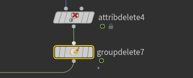
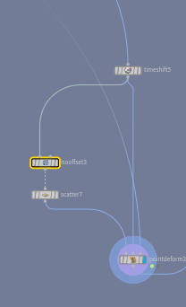
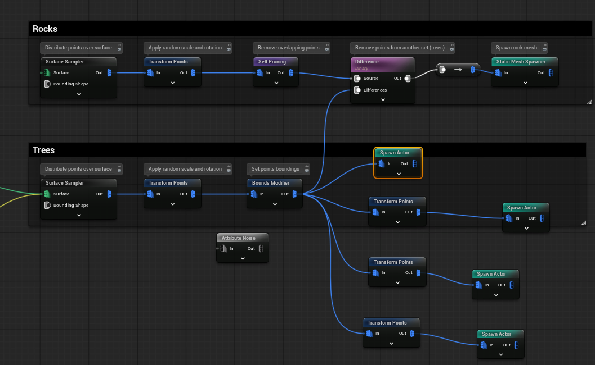
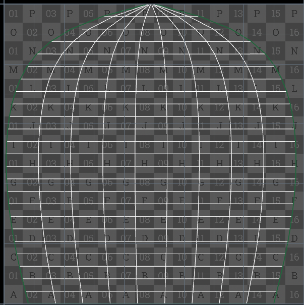

Week8
HAVE COMPLETED:
TO-DO LIST:
-
Research shader workflow in Unreal Engine
-
Experiment with different layouts for Shot 3
-
Transfer grape hyacinth into a particle version
-
Refine the layout for Shot 3 to make it look more realistic
This week, I mainly focused on converting the grape hyacinth into particles using VAT (particle sprites).



To successfully export VAT particles, each particle must have a valid ID attribute. Unused attributes should also be deleted to avoid export errors. Before exporting, the simulation needs to be cached first, otherwise the process becomes extremely slow.
Problem:
One issue with the particle grape hyacinth was that we needed particles distributed inside the volume rather than only on the surface. However, when using Points from Volume in Houdini, the generated points changed every frame, causing unstable growth animation and visible jittering. To solve this problem, Yichen and I explored different solutions with Claude, and Craig Fowler also helped us identify a more stable approach.
Solution:
We first used TimeShift in Houdini to lock the geometry to the first frame, then converted it into a volume using IsoOffset. To avoid unwanted line artifacts in the volume, the Uniform Sampling Divs value had to be increased. After scattering points inside the volume, Point Deform was applied to transfer those points from the frozen geometry back to the original animated model.

PCG:
To make the worm’s-eye view of the grape hyacinth feel realistic, all plants needed to remain on a consistent ground level. Ben helped us use PCG in Unreal Engine to generate the layout automatically, while camera placement was adjusted to strengthen the sense of realism. The layout was built using Spawn Actor and Transform Points, which allowed four different grape hyacinth variations to be distributed within a defined area.


UV:
At first, the leaf UVs did not fully occupy the UV grid, which caused the texture to appear blurry in Unreal Engine. I then adjusted and scaled the UVs so they fully occupied the available space, which improved texture clarity.


-
Refine the grape hyacinth and its leaf texture